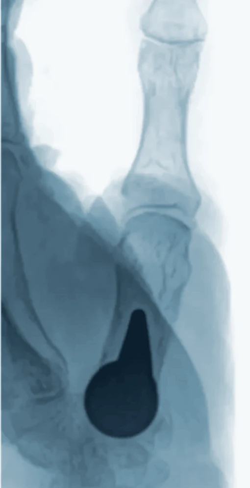
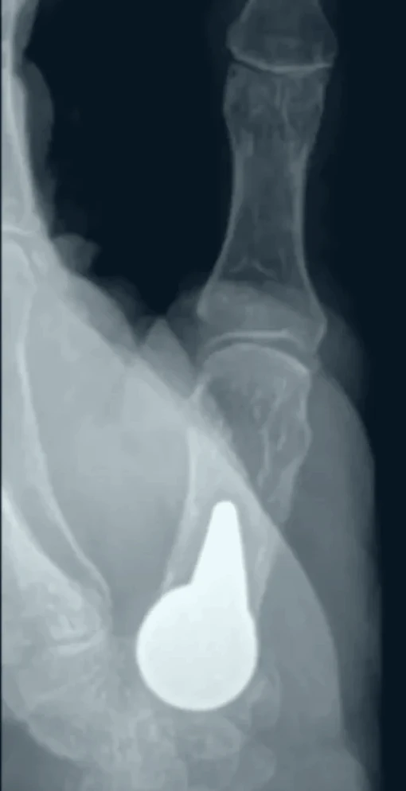

HomeThumb arthritis
Thumb-base arthritis. Keep the bone.
The most common operation for arthritis at the base of the thumb removes a whole bone. I prefer to stage the joint first, and when it has to be replaced, to replace it, so your thumb keeps its length and its strength.
 One week after a BioPro thumb replacement
One week after a BioPro thumb replacementIs this you?
It starts with a car key.
Basal joint arthritis wears the cartilage where the thumb meets the wrist, the joint that lets it swing across the palm. After the small joints at the fingertips, it’s the most common place for arthritis in the hand, and the one that matters most for what your hand can do.
- Turning things. Keys, doorknobs, jar lids.
- Pinching. Buttons, a pen, a page.
- Gripping. A pan, a racket, a coffee cup.
- A bump at the base of the thumb, or a thumb that bends back at the middle joint.


Move over the X-ray
After the operation
The joint is replaced. The bone stays.
This is a real X-ray from one of Dr. Badia’s patients after a BioPro replacement. Move over it to see the original radiograph. The bright shape is the implant, seated in the base of the thumb metacarpal, with the trapezium still in place below it.
- Two pieces, 48 combinations
Each part is sized separately, so the implant fits your anatomy rather than a single standard shape.
- Length kept
No bone is removed, so the thumb doesn’t shorten or change shape.
- A way back
If pain continues, it can still be converted to a traditional operation.
The Badia staging system
One operation can’t fit every stage.
Dr. Badia published an arthroscopic staging system for this joint in Hand Clinics (2006) and Operative Techniques in Orthopaedics (2007). The stage, often confirmed by looking inside the joint with a small camera, decides the treatment.
Stage I: cartilage still intact
The joint lining is inflamed and the ligaments may be loose, but the cartilage surfaces are still there. The pain is real, and an X-ray can look almost normal.
Arthroscopic synovectomy
Through two tiny incisions, Dr. Badia removes the inflamed lining with a small camera and instruments, and sometimes tightens the capsule.
Why act at this stage
Splints and injections ease symptoms but don’t change the joint. Treating early keeps every later option open.
Stage II: worn through in one area
Cartilage has worn down to bone in part of the joint while the rest still has cushion. This is where the load through the thumb is concentrated.
Corrective osteotomy
A small wedge of bone is removed from the base of the thumb metacarpal to redirect the force onto the healthier part of the joint.
What it preserves
Your own joint. Nothing is removed from the trapezium and no implant is used.
Stage III: worn across the joint
Cartilage is gone across both surfaces of the joint. Pinch is weak and the base of the thumb may look swollen or out of line.
BioPro thumb joint replacement
The worn joint is replaced with a two-piece implant, chosen from 48 size combinations, that forms a new socket in the trapezium instead of removing it.
The usual alternatives
Removing the trapezium (LRTI), joint fusion, or tissue interposition. Dr. Badia explains each one and when he would choose it.
Simplified for patients from Badia A., Khanchandani P. Thumb Carpometacarpal Joint Arthroscopy: A Classification System and Rationale for Treatment. Oper Tech Orthop 2007;17:125–132.
 Ultrasound with augmented reality
Ultrasound with augmented reality
Before your next injection
Relief isn’t the same as treatment.
Anti-inflammatories, splints and cortisone shots can help for a while. In his published work, Dr. Badia points out that none of them changes the joint itself, and that repeated steroid injections can speed up cartilage loss.
If you’ve had more than one injection and the pain keeps coming back, it’s worth knowing your stage before the next one.
The decision most patients face
Remove the bone, or replace the joint?
Most patients with advanced thumb arthritis are offered LRTI, which removes the trapezium. Dr. Badia is one of the few American surgeons who embraces replacing the joint instead.
| LRTI, trapezium removed | BioPro joint replacement | |
|---|---|---|
| Base of the thumb | The trapezium bone is removed and the thumb is suspended with a tendon taken from your forearm. | The joint is replaced and a new socket is formed in the trapezium. The bone stays. |
| Length and look | The thumb shortens, which changes how the hand looks. | Length and appearance are kept. |
| Pinch strength | Drops at first. | Pinch and grip improve. |
| Recovery | Long. | Fast. |
| If pain continues | Revision surgery has been shown to do worse. | Can still be converted to a traditional operation. |
Comparison as presented on drbadia.com. Not every thumb is a candidate for an implant; your stage, bone quality and activity level decide.
Recovery, filmed
What the first weeks look like.
Real follow-up videos from Dr. Badia’s patients. Every recovery is different, and he’ll tell you what to expect for yours.
48 hrsBasal joint replacement
“I’ve had very little, almost no pain,” one patient said two days after the operation.
7 daysFirst follow-up
A 78-year-old retired orthopedic surgeon shows his thumb on camera after choosing BioPro for himself.
4 weeksVideo follow-up
“Bionic thumb?” A four-week check by video, X-ray on screen.
LaterThe other hand
Patients come back to have their second thumb replaced.
Four-week follow-up, by video
Back for the other hand
Why he traveled
Offered LRTI in Atlanta. Chose Miami.
Doctors in Georgia recommended removing his trapezium and weaving tendons into the gap. He researched the alternatives, found Dr. Badia, and had the joint replaced instead.
A patient who talks about it
Jordan Belfort, after his thumb replacement.
He and Dr. Badia go through his thumb pain, what he tried before surgery, and why he chose a BioPro joint replacement.
Questions
Before you decide.
Am I a candidate for a thumb joint replacement?
It depends on your stage, your bone quality and what you need your hands for. Earlier stages may do better with arthroscopy or an osteotomy that keeps your own joint. Dr. Badia decides after seeing your X-rays and examining the thumb, or on a video visit if you live far away.
Can I start without traveling to Miami?
Yes. Request a video visit, send your X-rays or MRI ahead, and Dr. Badia will review them and talk you through the options. Many international and out-of-state patients only travel once there’s a plan.
Will my insurance cover it?
Coverage depends on your plan. The team will go through your benefits with you before you schedule, including whether you can use out-of-network benefits.
Can I be awake for the operation?
Many hand procedures can be done wide awake with local anesthesia and virtual reality. Whether that suits your thumb operation is something to ask Dr. Badia at your consultation. How awake surgery works.
What is the BioPro implant?
A modular, two-piece implant for the thumb base joint. Because the pieces are chosen separately, there are 48 combinations, which lets the implant match your anatomy rather than forcing a one-size design. Dr. Badia has used it exclusively for his thumb replacements for years.
Send your thumb X-ray.
Dr. Badia will review it and tell you what stage he thinks you’re at, and which options make sense.